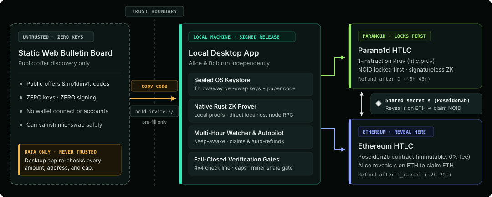

Zero keys on this site · No wallet connection · Pure static site
Bridge-free NOID ↔ ETH atomic swaps directly between two people.
A contract on Parano1d and a contract on Ethereum hold the coins. Either both people get what they agreed on, or both get their own coins back after a deadline. No bridge, no wrapped token, no custodian, and no admin key. Built for two people who have a reason to trust each other, and for small amounts.
Trust boundary
The website is just a bulletin board—it never touches keys, never signs anything, and can disappear mid-swap without affecting your funds. The desktop app handles the swap.
Same-origin reference snapshot · Zero third-party APIs
Assets & local rate calculator
Reference chain facts and an illustrative local calculator loaded only from ./data/market.json on this host. Reference only — No1d Swap does not set a price; agree on terms with your counterparty.
Architecture
Why a desktop program, not a web app
Atomic swaps need verified code, sealed secrets, and a watcher that stays awake for hours. A browser tab is the wrong place for all three.
01
No silent code changes on refresh
A web app can serve different JavaScript on every page load. No1d Swap ships as offline releases signed by one Ed25519 release key; the app checks that signature before announcing an update and never installs silently.
02
Keys stay sealed in your OS keystore
Swap secrets and fresh per-swap keys never enter a browser. They stay sealed in your operating system's key store, backed by atomic crash-safe swap files and a paper recovery code shown before any deposit.
03
Reliable multi-hour timelock watching
Swaps span hours across two blockchains, and a suspended browser tab can miss a claim deadline. The desktop app watches both chains continuously and keeps your computer awake while coins sit in a contract.
04
Direct localhost node access & native Rust ZK proving
Parano1d spends require zero-knowledge proofs (noid_gkr) and direct reads against your local node (127.0.0.1 or [::1]) plus a second-node cross-check—work a browser sandbox cannot do reliably.
05
No central server to censor or take offline
The desktop program runs locally on a private no1d://app scheme with no listening network port. Even if this website vanishes mid-swap, your swap settles or refunds directly on Parano1d and Ethereum.
Protocol
How a swap works
Alice sells NOID for ETH. Bob sells ETH for NOID. Each person runs the desktop program on their own computer. This site only passes public invitation text; every check, lock, reveal, and refund runs locally in the app.

Trust boundary: this website handles public no1dinv1: invitation codes only. A code pasted into the desktop app's New Swap form only fills it in—nothing is approved, deposited, or broadcast from the browser.
1. Bob saves or copies an invitation
Bob · Desktop app
Bob saves an invitation file or copies a one-line no1dinv1: code containing only public fields: network, amounts, pinned contract, and Bob's NOID and ETH addresses. No secret ever appears in an invitation. Alice opens or pastes it into her desktop app to pre-fill her form, and checks every value locally.
Public fields only — zero secretsPre-fill only — never starts a swap
1 / 6
In plain words
Why Parano1d makes the hashlock free—and why NOID always locks first
Three terms first. A hashlock is a lock that opens for whoever shows a secret s whose hash H is written on the lock. A timelock is a deadline after which locked coins return automatically to whoever put them in. The reveal is the moment s becomes public on-chain: one person takes the other's coins by showing s, and the other reuses s to claim theirs.
1. Free hashlock on Parano1d
Parano1d has no signatures. A wallet spends by giving a zero-knowledge proof that it knows a 256-bit secret s whose Poseidon2b hash is its address (A = Addr(s)). Setting a contract's claim authority to Addr(s) makes it a hashlock already—htlc.pruv compiles to 1 of 16 instructions with no extra hash opcode.
2. NOID must lock first
Because a Parano1d claim is a zero-knowledge proof, it never exposes s on-chain. That means Parano1d can never be the reveal leg. Alice (holding NOID) creates s and locks first with the longer deadline (~6 h 45 m); Bob (holding ETH) locks second with the shorter deadline (~2 h 20 m).
3. Reveal happens on Ethereum
In the desktop app's poseidon lock, the Ethereum contract checks Addr(s) itself—no off-chain equivalence proof is needed. When Alice takes Bob's ETH, she reveals s on Ethereum; Bob's app reads s from that transaction and proves his NOID claim before the deadline.
Same-origin snapshot · Read-only handoff
Public Bulletin Board & Invite Code Workbench
Browse same-origin Nostr offer snapshots from ./data/offers.json (with Sepolia-only built-in samples) and inspect or format public no1dinv1: invitation codes compatible with No1d Swap v0.2.0 (upcoming). Everything displayed here is informational only—never deposit to any address shown on a web page. The desktop program reads every term from the code and both chains itself.
A listing is not a check. The program checks the terms; the miner limit still applies to the ETH side.
Public, untrusted bulletin board. Offers listed here are unverified — the desktop app checks amounts, caps, the pinned contract, and address format locally (plus Parano1d mining share before Bob approves), not whether a counterparty is honest. One producer has recently mined about 75% of Parano1d blocks (measured 2026-11-23 UTC); above half of the hashrate, a stranger acting as Alice can cheat Bob (the ETH side), and the desktop app refuses Bob's approval on mainnet above 65%.
Fake and copied offers: Anyone can post. A listing's age, note, and displayed size are untrusted text. A pasted code is pre-fill only (it never approves, deposits, starts a step, or skips the check-line match); this release of the desktop program has no link handler, so the code is copied and pasted into the form. Live public offers are collected out-of-band by a host job from Nostr relays (separate from the desktop program's private test board) into same-origin ./data/offers.json, re-validated in your browser, and shown with each poster's public key, NIP-13 PoW bits, liveness status, and explicit warnings for copied/duplicate no1dinv1: payloads or repeated Bob addresses.
Read before swapping
Limits, risks & track record
The desktop program shows these same limits before every swap. No1d Swap is young software that moves real value—use only amounts you can afford to lose.
Three ways to lose coins
1. Offline after the reveal (ETH seller / Bob): After Alice claims the ETH and reveals s, Bob's program has at least about 75 minutes on mainnet to claim the NOID (and get it final 18 blocks before the deadline). If Bob's computer is off or disconnected past that window, Alice can recover the NOID and Bob loses the ETH.
2. Parano1d miner concentration (ETH seller / Bob): One producer has made about 75% of recent Parano1d blocks (measured 2026-11-23 UTC; earlier 20-day range 45% to 63%, 52.7% on 2026-11-08 UTC). Above half of the hashrate, no longer timeout protects Bob if Alice is also the majority miner. Swap only with someone you have a reason to trust. Before Bob locks on mainnet, the swap tool refuses above 35%, and Bob's explicit approval caps out at 65%—never higher. That is a screen, not a defence against a miner split across addresses or a share that grows later.
3. No independent outside audit yet: Every review so far was internal to the project. Neither the code nor the preimage resistance of Parano1d's Addr hash (Poseidon2b) for this use has been audited by outside experts. Keep amounts small.
Hard caps & exact timings
Network
Max NOID
Max ETH
Refund deadlines
Mainnet
Chain 1 · v1 only
20,000 NOID
1 ETH
ETH ~2 h 20 m NOID ~6 h 45 m
Sepolia
Chain 11155111
20 NOID*
0.01 ETH
ETH ~1 h 30 m NOID ~3 h 5 m
*Parano1d has no test network: the NOID is real money in every swap, including on Sepolia. Usual happy-path time is about 50 minutes (most of it waiting for finality). Bob's post-reveal claim window is ≥ 75 min on mainnet (≥ 5 min on Sepolia).
Deployed 2026-11-20 UTC (block 26,459,748) from a single-use key. Source: eth/contracts/HTLCPoseidonV2.sol. No owner, no admin key, no pause, no upgrade. Informational reference only—never send ETH directly to the contract address outside the desktop app.
Mainnet · Run 8
1 settled, 0 refunded (terminal tools)
5 NOID ↔ 0.001 ETH on Ethereum mainnet (poseidon lock, production profile, 54 minutes). Both sides were run by the developer using the terminal tools before the desktop program existed. No swap between two separate people has run yet, and the desktop app itself has not yet settled on mainnet (run 23 stopped cleanly at Bob's producer screen at ~76% concentration, with nothing deposited).
Hostile campaign · L1–L6
Runs 15–20 against misbehavior
Tested live on real nodes: Alice never funds (L1), Alice under-funds 4 instead of 5 NOID (L2), Bob locks with a too-short 28-minute reveal window (L3), a third party closes after reveal and still pays Bob (L4), and a second-node outage plus Parano1d epoch rotation before claim (L5–L6). Every case aborted or settled as designed.
Desktop · Rehearsals 4.10–4.12
Two-machine autopilot on Sepolia
Three full swaps between a Windows x64 installer (Alice) and a macOS Apple Silicon build (Bob) for 5 NOID ↔ 0.001 Sepolia ETH, with one approval each. All three settled end-to-end on autopilot; rehearsal 4.12 verified short-deposit flagging (13 s after block) and automatic lock after top-up (49 min total).
Desktop program · v0.2.0 (upcoming)
Download & verify before you open
The release page and hosting account are not the proof; the offline Ed25519 signature on release.json is. If the signature or SHA-256 does not check out, do not install. Release v0.2.0 is upcoming—confirm exact installer filenames and verify commands against the published release.json once released.
No1d Swap v0.2.0 (upcoming) for macOS (Apple Silicon)
Expected disk image: No1d-Swap-0.2.0-mac-arm64.dmg · Also download release.json and release.json.sig from the same release and confirm the exact filename inside release.json once published.
The disk image is not notarized or code-signed for Apple because this project has no legal name to put on a certificate. macOS will refuse to open it at first: open System Settings → Privacy & Security and choose Open Anyway—only after Steps 1 and 2 pass. On first launch, write down the paper recovery code before depositing anything.
No1d Swap v0.2.0 (upcoming) for Windows (x64)
Expected installer: No1d-Swap-0.2.0-win-x64.exe · Also download release.json and release.json.sig from the same release and confirm the exact filename inside release.json once published.
The installer is not code-signed for Windows because this project has no legal name to put on a certificate. SmartScreen will show "Windows protected your PC": choose More info, then Run anyway—only after Steps 1 and 2 pass. On first launch, write down the paper recovery code before depositing anything.